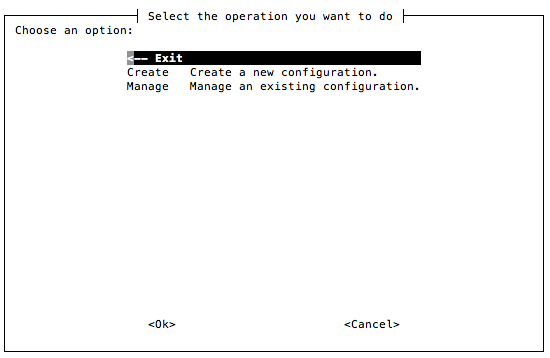

How to Start nProbe
Systemd-based Systems
The nProbe service is controlled using the systemctl utility on operating systems and distributions that use the systemd service manager.
Upon successful package installation, the nProbe service is automatically started on the loopback interface, and it is also started on boot by default. The service can be disabled as explained in the next sections to prevent this behavior.
Configuration Files
The default service uses a configuration file that is located at /etc/nprobe/nprobe.conf and that is populated with some defaults during installation. The configuration file can be edited and extended with any configuration option supported by nProbe. A service restart is required after configuration file modifications.
Multiple nProbe instances can be simultaneously executed on the same machine. Typically, each instance is bound to an interface. To allow different nProbes to be run with independent configurations, multiple configuration files co-exist under the directory:
/etc/nprobe/
Each configuration file starts with “nprobe-” and ends with a suffix corresponding to the interface name it is associated to, exception made for the default nProbe service, corresponding to the configuration file nprobe.conf. For example, assuming three different nProbe daemons have to be run independently for eth0, eth4, and myri0, in addition to the default service, the following configuration files should be present:
# ls -lha /etc/nprobe/
total 28K
4.0K -rw-r--r-- 1 root root 211 Mar 15 17:54 nprobe.conf
4.0K -rw-r--r-- 1 root root 211 Mar 15 17:54 nprobe-eth0.conf
4.0K -rw-r--r-- 1 root root 195 Jan 8 17:17 nprobe-eth4.conf
4.0K -rw-r--r-- 1 root root 215 Jan 8 17:22 nprobe-myri0.conf
When nProbe is used in probe mode it is not bound to any interface as its job is to collect NetFlow from some other device. In this case the configuration file to be created is:
nprobe-none.conf
Editing Configuration Files
People familiar with editors, can create and modify the configuration files. However for the rest of us there is a Linux-only tool part of the nProbe package and named nprobe-config that allows you to edit configurationf files interactively. You need to start it as superuser (or sudo nprobe-config) and follow the instructions on the screen. Below you can find two examples of how the tool works


Automatic Startup
To start, stop and restart the default nProbe service type:
systemctl start nprobe
systemctl stop nprobe
systemctl restart nprobe
To prevent nProbe from starting on boot type:
systemctl disable nprobe
Or to start nProbe on boot, assuming it has previously been disabled, type:
systemctl enable nprobe
To check the status of the service, including its output and PID, type:
systemctl status nprobe
To control additional services, based on the interface name specified in the configuration file name as described in the previous section, the ‘nprobe@<interface>’ service should be used, example:
systemctl enable nprobe@eth0
systemctl start nprobe@eth0
init-based Systems
Init-based system are usually available only on embedded systems, as otherwise systemd base scripts are the dafault. The nProbe service can be controlled on old init-based systems by means of the script script located at:
/etc/init.d/nprobe
In order to launch nProbe daemons automatically on system startup, empty files ending with “.start” must be created in the same directory of the configuration files.
# ls -lha /etc/nprobe
-rw-r--r-- 1 root root 211 mar 15 17:54 nprobe-eth0.conf
-rw-r--r-- 1 root root 0 mar 17 15:44 nprobe-eth0.start
Those configurations can be controlled with the script /etc/init.d/nprobe. The script accept different options and one or more interface names as input. Calling the script without options yields the following brief help
sudo /etc/init.d/nprobe
Usage: /etc/init.d/nprobe {start|force-start|stop|restart|status} [interface(s)]
The options and the usage of the daemon control script is discusse below.
start
This option is used to start daemon nProbes for interfaces that have a “.start” file. Calling start on interfaces with missing “.start” files yield and error. For example
# ls -lha /etc/nprobe
-rw-r--r-- 1 root root 211 mar 15 17:54 nprobe-eth0.conf
-rw-r--r-- 1 root root 0 mar 17 15:44 nprobe-eth0.start
-rw-r--r-- 1 root root 195 Jan 8 17:17 nprobe-eth4.conf
-rw-r--r-- 1 root root 215 Jan 8 17:22 nprobe-myri0.conf
# /etc/init.d/nprobe start eth0
Starting nProbe eth0
# /etc/init.d/nprobe start eth4
nProbe eth4 not started: missing /etc/nprobe/nprobe-eth4.start
force-start
This option is used to start daemon nProbes for instances that do not have a “.start” file. Calling force-start on interface eth4 shown in the example above doesn’t raise any error and the daemon is properly started
# /etc/init.d/nprobe force-start eth4
Starting nProbe eth4
stop
This option is used to stop an nProbe daemon instance. For example
# /etc/init.d/nprobe stop eth4
Stopping nProbe eth4
restart
This option causes the restart of a daemon associated to a given interface, e.g.,
# /etc/init.d/nprobe restart eth0
Stopping nProbe eth0
Starting nProbe eth0
status
This options prints the status of a daemon associated to a given interface, e.g.,
# /etc/init.d/nprobe status eth0
nprobe running
Running nProbe on Windows
nProbe can be activated either as service or as application (i.e. you can start it from cmd.exe). The nProbe installer registers the service and creates an entry on the Start menu. In order to display nProbe inline help, the executable must be run with /h
C:\Program Files\nProbe>nprobe /h
Available options:
/i <service name> [nprobe options] Install nprobe as service
/c [nprobe options] Run nprobe on a console
/r <service name> Deinstall the service
Example:
Install nprobe as a service: nprobe /i my_nProbe -i 0 -n 192.168.0.1:2055
Remove the nprobe service: nprobe /r my_nProbe
Notes:
Type ‘nprobe /c -h’ to see all options
In order to reinstall a service with new options it is necessary to first remove the service, then add it again with the new options.
Services are started/stopped using the Services control panel item.
You can install the nProbe service multiple times as long as you use different service names.
The full list of options is available with nprobe /c -h. If nProbe is started on the console, the /c flag needs to be used (e.g. nprobe /c –n 127.0.0.1:2055).
Specify Monitored Interfaces
As network interfaces on Windows can have long names, a numeric index is associated to the interface in order to ease the nProbe configuration. The association interface name and index is shows typing the ‘nprobe /c –h’
C:\ntop\nprobe\Debug>nprobe.exe/c -h
Available interfaces:
[index=0] 'Adapter for generic dialup and VPN capture'
[index=1] 'Realtek 8139-series PCI NIC'
For instance, in the above example the index 1 is associated to the interface Realtek 8139-series PCI NIC, hence in order to select this interface nprobe needs to be started with –i 1 option.
Execution as a Windows Service
Windows services are started and stopped using the Services application part of the Windows administrative tools. When nProbe is used as service, command line options need to be specified at service registration and can be modified only by removing and adding the service. The nProbe installer registers nProbe as a service with the default options. If you need to change the nProbe setup, you need to do as follows:
nprobe /r Remove the service
nprobe /i <put your options here> Install the service with
the specified options.